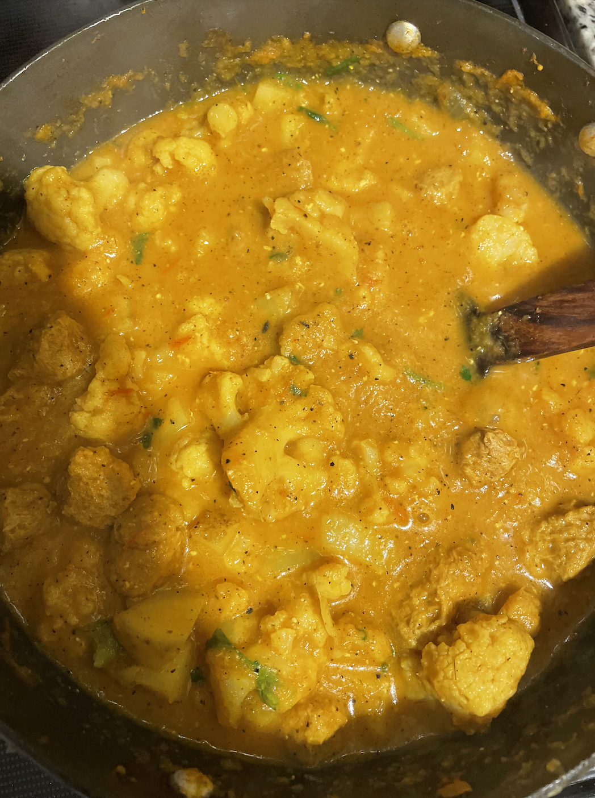
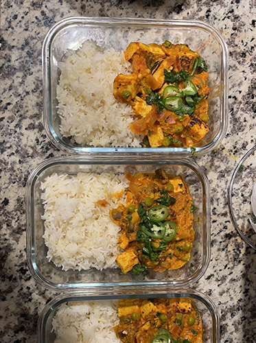

Our mission
To educate and share the beauty of Indian spices and to come together as a community to share and experiment with recipes.
Why are spices important in your meals?
Firstly, they add so much flavor and color to our food, that makes our food smell and taste 10 times better! More importantly, they contain antioxidants that prevent inflammation and boosts immunity. So, why not get the benefit of both health and flavor in one? The great thing about these spices is that even half a teaspoon brings a lot of goodness to you.

So, what are some spices that are commonly used in Indian cuisine?
Turmeric
We’ve also seen the “golden” milk trend that has been marketed in the western world that has been practiced for generations in India. It is simply turmeric mixed with warm milk – and it is life changing. This spice is a rich anti-inflammatory component that also reduces pain and swelling in different parts of your body.
Cumin
Research suggests that black cumin is a strong and effective spice against mental and neurological illnesses, diabetes, cardiovascular disorders, infertility as well as infections. You can use both raw cumin seeds as well as cumin powder in your dishes.
Coriander
These seeds, either whole, ground, or extracted may help in lowering blood sugar. This is an all-rounder spice that influences a variety of characteristics in your body such as serving as an antioxidant, immunity boosting, protecting health and brain health.
Cinnamon
This spice is a good addition to the meals for those who have high blood sugar. Similar to coriander, it helps in protecting the heart and reducing cholesterol levels. Fun fact: we use raw cinnamon sticks as a base with other spices so we can get the maximum flavor out of it!
Red Chili
This spice is staple in Indian cuisine – and gives the kick! Similar to the ones above, red chilis fight inflammation as well as pain. It contains iron that increases blood flow and also promotes digestive health.
Here are some of the recreations that our followers have created!
Sent from Barbara Thomas – New York, USA

Sent from Sam Kim – Seoul, Korea

Sent from André Scholz – Munich, Germany
Testimonials
“The recipes provided are simple, to the point and great for someone who is just starting out trying new cuisines.”
“I always found Indian food challenging to make with the vast number of spices, but this website broke it down easy for me to understand and create a delicious meal for my family.”